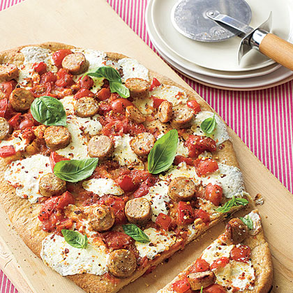
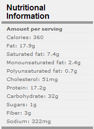
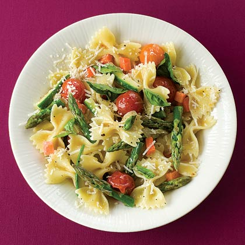
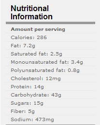
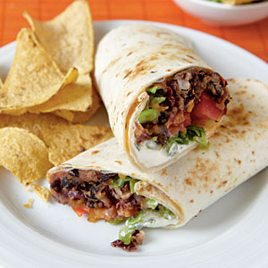
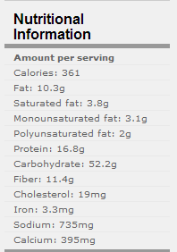
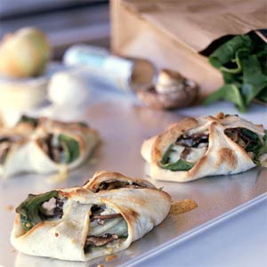
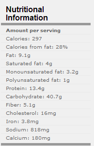
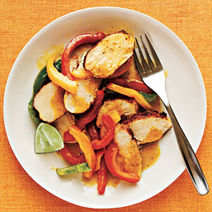
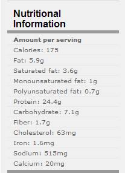

|
Fresh Mozzarella, Basil, and Chicken Sausage Pizza |
|
|  | |
|
Ingredients
1
pound fresh or frozen whole wheat pizza dough, thawed
1 tablespoon olive oil
2 medium tomatoes (about 10 ounces)
1/4 teaspoon crushed red pepper
1/4 teaspoon dried oregano
1/2 cup fresh basil leaves, divided
8 ounces fresh mozzarella, pulled into 1-inch chunks
2 links (6 ounces total) precooked Italian chicken sausage (such as
Applegate brand), sliced
Preparation
1. Position one oven rack in middle of oven and another on the
lowest setting. Place a flat baking sheet on the bottom rack.
Preheat oven to 475°.
2. Roll dough into a large, thin oval (about 18 inches long). Brush
oil over dough.
3. Remove preheated baking sheet from oven. Slide dough onto sheet
and return to bottom rack. Bake for 8 minutes, then remove crust
from oven.
4. Meanwhile, clean hands, crush tomatoes, crushed red pepper,
oregano, and 1/4 cup basil in a medium bowl.
5. Spread sauce in an even layer over crust, leaving a 1/4-inch
border. Top with mozzarella and sausage. Bake on middle rack an
additional 10 minutes or until crust is golden brown and cheese
melts. Sprinkle with remaining basil; cut into 12 slices or
wedges and serve. |
 |
| Yield: Makes 6 servings (serving size: 2 slices of pizza) | |
|
Pasta Primavera |
|
|  | |
|
ingredients 1 tablespoon olive oil 1 small onion,
sliced 3 cloves garlic,
thinly sliced 1/2 pound small
multicolored cherry tomatoes 3 cups low-fat
milk (1%) 3 tablespoons
flour 1/2 teaspoon
salt 1/2 teaspoon
pepper 8 ounces
farfalle (bow-tie) pasta 3 small carrots
(6 ounces), peeled and diced 1/2 pound thin
asparagus, trimmed and cut into 2-inch pieces 1 small
zucchini, halved and cut into 2-inch matchsticks 1/4 cup fresh
basil leaves 1/2 cup finely
shredded Parmesan cheese (1⁄2 ounce), divided
Preparation 1. Bring a large pot of water to a boil. 2. While water
is heating, heat oil in a large nonstick skillet over medium-high
heat. 3. Add onion and
cook, stirring, until soft, 6–7 minutes. Add garlic and cook 1
minute. Add tomatoes and cook (do not stir) until slightly bursting,
5 minutes. 4. Whisk
together milk and flour and add to vegetables. Bring mixture to a
boil; reduce heat and simmer. stir until thickened, 2–3 minutes .Add
salt and pepper, stir to incorporate, remove from heat, and cover
with foil to keep warm. 5. Cook pasta
according to package directions. During last 3 minutes of cooking,
add carrots to boiling pasta. During last minute of cooking, add
asparagus and zucchini. 6. Drain pasta
and vegetables (do not rinse); add immediately to warmed
vegetable-cream sauce. 7. Toss gently
and divide among 4 pasta bowls. 8. Divide
basil and parmesan among bowls. |
 |
| Yield: Makes: 4 servings (Serving size: 2 cups pasta and 2 tablespoons cheese) | |
|
Chipotle Bean Burritos |
|
|  | |
|
ingredients
1
tablespoon canola oil
1 garlic clove,
minced
1/2 teaspoon
chipotle chile powder
1/4 teaspoon salt
1/3 cup water
1 (15-ounce) can
organic black beans
1 (15-ounce) can
organic kidney beans,
3 tablespoons
refrigerated fresh salsa
6 (10-inch)
reduced-fat flour tortillas
1 cup (4 ounces)
pre shredded reduced-fat 4-cheese Mexican blend cheese
1 1/2 cups chopped
plum tomato (about 3)
1 1/2 cups
shredded romaine lettuce
6 tablespoons
thinly sliced green onions
6 tablespoons
light sour cream
Preparation
1. Heat oil in a
large nonstick skillet over medium heat. Add garlic to pan; cook 1
minute, stirring frequently. Stir in chile powder and salt; cook 30
seconds, stirring constantly. Stir in 1/3 cup water and beans; bring
to a boil. Reduce heat, and simmer 10 minutes. Remove from heat;
stir in salsa. Partially mash bean mixture with a fork.
|
 |
|
Yield: 6
servings (serving size: 1 burrito) |
|
|
Spinach Calzones with Blue Cheese |
|
|  | |
|
Ingredients
1 (10-ounce) can refrigerated pizza crust
Cooking spray
4 garlic cloves, minced
4 cups spinach leaves
8 (1/8-inch-thick) slices Vidalia or other sweet onion
1 1/3 cups sliced cremini or button mushrooms
3/4 cup (3 ounces) crumbled blue cheese
Preparation
Preheat oven to 425°.Unroll dough onto a baking sheet coated with cooking spray; cut into
4 quarters. Pat each quarter into a 6 x 5-inch rectangle. Sprinkle
garlic evenly over rectangles. Top each rectangle with 1 cup
spinach, 2 onion slices, 1/3 cup mushrooms, and 3 tablespoons
cheese. Bring 2 opposite corners to center, pinching points to seal.
Bring remaining 2 corners to center, pinching all points together to
seal. Bake at 425° for 12 minutes or until golden |
 |
|
Yield: 4
servings (serving size: 1 calzone) |
|
|
Curried Chicken Sauté |
|
|  | |
|
Ingredients 1/2 teaspoons curry powder 3/4 teaspoon salt 1/2 teaspoon black pepper 1 pound skinless, boneless chicken breasts 1 (8-ounce) package pre sliced mixed bell peppers 1 cup light coconut milk 1 lime
Preparation 1.Heat a nonstick skillet over medium-high heat. Sprinkle 1 teaspoon curry powder, 1/2 teaspoon salt, and 1/2 teaspoon black pepper over chicken. Coat pan with cooking spray. Add chicken to pan; cook 5 minutes on each side or until done. Remove chicken from pan; keep warm. Add bell peppers and remaining 1/2 teaspoon curry powder to pan; sauté 1 minute. Add coconut milk, and bring to a boil; reduce heat, and simmer 4 minutes or until mixture is slightly thickened. Cut lime in half. Squeeze 1 tablespoon juice from 1 lime half; slice other half into 4 wedges. Stir juice and 1/4 teaspoon salt into bell pepper mixture. Cut chicken across grain into thin slices. Serve chicken with bell pepper mixture and lime wedges |
 |
|
Yield: 4
servings (serving size: 3 ounces chicken, 1/2 cup pepper mixture, and 1
lime wedge) |
|